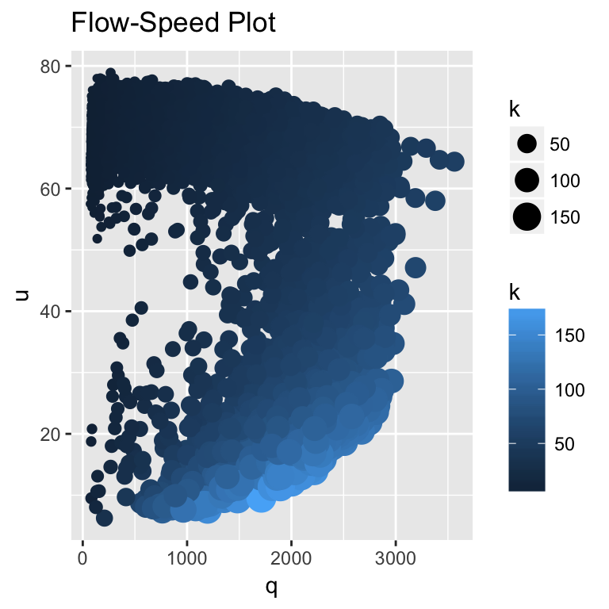

The Ring-Road Experiment
1. A Controlled Experiment
We will begin our model building exercise by describing a single-lane ring or loop road where the drivers cannot pass one another or enter or exit the loop. The number of vehicles traveling around the ring road shown in the YouTube video is fixed at \(n\) = 22 vehicles (Sugiyama et al. 2008) The drivers were instructed to maintain a constant speed and distance headway \(h\), measured as the distance between the front bumpers of the lead and following vehicles.
The drivers cannot follow instructions. After a few sections, the traffic breaks down. Traffic breakdown at a bottleneck is more complex because it requires traffic to merge. The analysis of a loop road is more straightforward. The number of vehicles on the loop road is fixed and equal to \(n\).
Drivers travelling around a loop road will attempt to optimize the situation. They select a constant speed \(u\) and constant headway \(h\). Under these ideal conditions, drivers will travel steadily around the road without interruption. The reality is that the drivers are unable to do so. Their speeds will vary by a slight amount and eventually, the vehicles will begin to interact. The situation is modelled by adding traffic noise \(\sigma\) to the speed \(u\). Assume speed \(U(t)\) to be a stationary time series motion model of the form:
\(U(t) = u + \sigma Z\)
with a mean speed \(u\) is a constant value over time, \(\sigma\) is a standard deviation of speed, \(Z \sim N(0,1)\) is a standard normal probability distribution and time \(t\) is measured in seconds. Models using time measurements in seconds are called microscale models. Models using data aggregated over 15-minute time intervals are called macroscale models. They will be discussed presently.
Now, we turn our attention to modeling vehicular interaction, better known in the literature as car following. The deterministic flow-density-speed relationship of \(q = k * u\), the fundamental relationship, is now treated as a random process of the form:
\(Q = K * U(t)\)
An interesting result occurs for the loop road. \(K\) is not a random variable but a constant. \(K = k = n /l\) where the l is the circumference of the roadway or \(2 \pi r\) with \(r\) equal to the radius of the ring-road. Thus, the flow equation is rewritten as:
\(Q = k * U(t) = n / l * U(t)\).
The volatility in \(Q\) is explained exclusively by the volatility in \(U(t)\) as defined by \(u\) and \(\sigma\).
2. Field Data
Our next step in this discussion is to investigate the traffic data and glean as much information from raw, real-world data. First, we investigate relationships among of flow \(q\), density \(k\) and speed \(u\) on the northbound lane on I-93 in Salem, New Hampshire. Next, we will look for meaningful relationships using visual imagry, scatter plots, box plots and time-series plots. Once these relationships are revealed, the next step is to develop mathematical models that capture these relationships.
Unlike the “toy” example, 20,656 recordings of \(q\), \(k\) and \(u\) were made over a period of eight months. The speed recordings are aggregate values. The space-mean speed is estimated as \(u = n/(1/\sum u_i)\) where \(u_i\) is an individual observation made in a 15-minute interval, \(i = 1,2,..., n\) is vehicle identification number, and \(n\) is the total number of vehicles observed in the interval. The flow for the interval is calculated as \(q = n/t\) where \(t\) is 15-minutes. The density is derived from the fundamental relationship of traffic flow \(q = k * u\). Thus, the density is estimated as \(k = q/u\). The site is a bottleneck because the number of lanes drops from three to two. By exploring the data, we will discover that congestion at the site is severe.
A Flow-Speed Plot scatter plot reveals much about the traffic at the site. For one, the data are extremely noisy or volatile, therefore making it difficult to reveal clear-cut patterns in the data. By using scaling and color shading of the \(k\) dots, the scatter plot become enhanced, making it easier to reveal patterns in the data. The smaller/black dots indicate fewer vehicles per mile than the large/blue dots.
Even though the data are noisy, patterns are revealed. For one, speeds between 60 and 80 miles per hour (mph) are observed at flows ranging from 0 to 3000 vehicles per hour (vph). The speed tends to decrease marginally with an increase in flow. The densities over this range increase but for the most part, do not exceed \(k \le 70\) vehicles per mile (vpm). Given these results, \(u^* =\) 50 mph is defined to be a critical speed where a congested state and a free-flow state are defined to be \(u \le u^*\) and \(u > u^*\), respectively. Low speeds and high densities, \(u \le u^*\) and \(k > 70\) vpm, tend to be associated and define a congested state.

3. Density-Speed
We continue to explore the relationship between \(k\) and \(u\) with the Box Plot of Density-Speed. To construct the diagram, the speed were sorted and placed into bins. For example, the labeled as \(k^*\) = 45 vpm consists of observations ranging 42.5 to 47.5 vpm. This value of \(k^*\) is taken from the Highway Capacity Manual (HCM), which defines it to be the roadway capacity for this geometric design. Visual inspection reveals that the chance of driving in a free-flow state, \(u^* > 50\), is greater when \(k^* \le 45\) vpm. The interquartile range of speed is extremely tight for \(k^* \le 45\) vpm. Excluding outliners, a driver can be assured that speeds of 70 mph or more can be expected. With the exception of the bin at \(k\) = 50 vpm, speeds considerably less than 25 mph is expected for \(k^* \ge 55\) vpm. It is impossible to explain why so many congested speed observations are located in the \(0 < k \le k^* = 50\) range. For \(k \le 50\) vpm, a better case can be made that a congested state will be observed.

A Time-Speed Plot draws attention to traffic breakdown, driving in a congested state with speeds of less than 50 mph, \(u \le\) 50 mph, is a common occurence. Simple inspection of the plot also reveals that long delays, congestion lasting more than one hour, are common. Remember a congested state is defined by speed, \(u \le 50\) mph. Also make note that each \((t,u)\) point on the figure represents a point-in-time denoted by \(t\), which means the freeway is in a congested state for 15 minutes. Note that \(t\) is not clock time but a time-index, each \(t\) representing a time interval of 15 minutes. At the extreme right, for example, the freeway is observed to have a time index of \(t\) = 36. Thus, time in a congested state in this instance is 36 / 4 = 9 hours.
Statistic summaries of the data reveal interesting facts. The total number of breakdown events is counted to be 227. The total time the freeway is in a congested state is calculated to be 444 hours. The average delay time is estimated to be 444/227 or about two hours. The breakdown count includes multiple breakdown in a single day. The chance of a breakdown is estimated to be 4 in 5. Stated another way, four days in a five-day work week the freeway is congested state with speeds ranging from \(10 < u < 20\) mph.
Of course, these statistical summaries are important performance measurements. However, they do not explain why traffic breakdown is so prevelent at the site. The data used in the Time-Speed Plot, a subset of the data used in the Flow-Speed Plot and Box Plot of Density-Speed diagrams, gives a different perspective. Note that the horizontal axis is labelled with time indices \(t = -1,0,1,2, ...\). The first breakdown in a string of initial breakdown events is denoted as t = 0$. Thus, \(u_0\) is called the breakdown speed and \(u_{-1}\) is called the pre-breakdown speed.
The pre-breakdown \(u_{-1}\) and breakdown \(u_0\) speeds, even after filtering the data, are extremely volatile. Since \(50 \le u_{-1} < 72\) mph is so wide a range, it cannot be used as an indicator or reliable predictor that a breakdown is likely to occur.
The smooth blue curve, a generalized additive model (gam), suggests that there may be a underlining structure associated with this chaos. Like above, the blue curve draws attention to the fact that congestion, \(u \le 50\) mph, can last a long time. It also draws attention to the fact that the average speed drop is around 35 mph.
The blue curve must be used with care. It does not take over one-hour (\(t\) = 5/4 = 1.25) for the speed to drop from 55 to 20 mph or speed drop of 35 mph. Again, remember the \(t\) values are time indices, not clock times. The blue curve is useful for inferences regarding speed drop but totally misleading with regard to times of occurrence. Every driver knows that breakdown events occur on a time scale of seconds not minutes.
4. Logistic Regression


5. Time-Distance Trajectories
The \(Q = k * U(t)\) model exhibits the same behavior as shown in the YouTube video. Our results are shown as time-distance \(t-x\) trajectories for \(k\) = 55 vehicles per mile (vpm). See the Congested Flow: Ring Road diagram. A same instructions given to the drivers of the Yuki Sugiyama experiment are assumed for the computer simulation that produced the \(t-x\) trajectories. Maintain a constant speed and headway \(h\). The simulated drivers are assigned the same initial speed of \(u\) = 30 miles per hour (mph) and are evenly placed along the \(x\) axis at \(t\) = 0. The traffic density is fixed at \(k\) = 55 vph. As in the full-scale experiment, the simulated drivers cannot maintain a constant speed or even spacing. After a few seconds, the vehicles begin to interact and form clusters (moving queues) and the traffic breaks down. Setting \(\sigma\) = 0, no clustering or breakdown can occur. Clearly, traffic volatility plays an important role.
The rrtrials computer simulation of the \(Q = n / l * U(t)\) model incorporates two important features not mentioned above: (1) driver performance in a car-following situation and (2) safety. They are most easily explained with the use of the dotted and dashed lines shown in the figure. The dotted line is the trajectory of vehicle 1, the lead vehicle, assuming that its driver could maintain a constant speed. Since \(x = u * t\), the slope of the dotted line is \(u = 10\) mph. The dashed line is the trajectory of vehicle 2 when vehicle 1 maintains the trajectory shown by the dotted line. Since vehicle 1 slows, vehicle 2 must slowdown to avoid a crash. The distance headways, measured by the distance between a lead/following pair, are safe distances.
Level-of-service estimates for the simulation are shown in the following table. The mean headway \(\bar{h}\) is the averages of the distances between points along the \(x = 0\) axis. The predicted flow for the simulation is estmated as \(\hat{Q} = 1/\bar{h}\). The standard deviation estimate of \(\hat{\sigma}_h\) is an indicator that a breakdown is triggered by a volatile process associated with vehicle speed exclusively. Assuming no volatility \(\sigma\) = 0, \(q = k * u\) = 1650 vph and \(h\) = 2.2 seconds at \(x\) = 0.
| Mean headway \(\bar{h}\) | Headway standard deviation \(\hat{\sigma}_h\) | Predicted flow \(\hat{Q}\) |
|---|---|---|
| 2.2 seconds | 1.6 seconds | 1650 vehicles per hour (vph) |
The \(Q = k * U(t)\) model suggests a cause-effect relationship exists: \(u\) and \(\sigma\) are the causal factors and \(\hat{Q} = 1/ \bar{h}\) is the response variable. As illustrated, vehicle clustering occurs only when density \(k\) sufficiently dense. When there are fewer vehicles on the ring road, \(k = n / l\) decreases resulting in longer time headways of \(\bar{h}\). Under less dense conditions, drivers can vary their speeds without affecting one another, thus reducing the chance of breakdown.
Overall, the \(Q\) model predicts poor performance. \(\hat{Q} \le c^*\) = 2250 vph with speeds \(\bar{u} \pm \sigma_U = 29 \pm 5\) mph. High volatility in speed and headway \(h\), shown in the Headway histogram, suggests driving under these conditions is unpleasant.


| Scenario | \(\bar{h}\), seconds | \(\hat{\sigma}_h\), seconds | \(\hat{Q}\), vehicles per hour (vph) |
|---|---|---|---|
| Free-Flow | 1.68 | 0.59 | 2137 |
| Congested-Flow | 1.76 | 1.46 | 2045 |
6. Forecasting
## Min. 1st Qu. Median Mean 3rd Qu. Max.
## 68.12 69.46 70.10 70.12 71.02 72.04
## Min. 1st Qu. Median Mean 3rd Qu. Max.
## 32.42 37.38 40.11 41.50 45.03 54.92
Sugiyama, Yuki, Minoru Fukui, Macoto Kikuchi, Katsuya Hasebe, Akihiro Nakayama, Katsuhiro Nishinari, Shin-ichi Tadaki, and Satoshi Yukawa. 2008. “Traffic Jams Without Bottlenecks—Experimental Evidence for the Physical Mechanism of the Formation of a Jam.” New Journal of Physics 10 (3):033001. http://stacks.iop.org/1367-2630/10/i=3/a=033001.